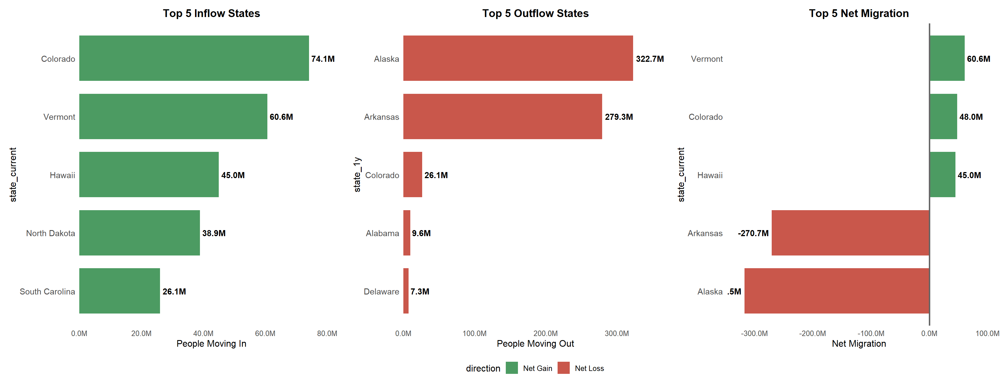
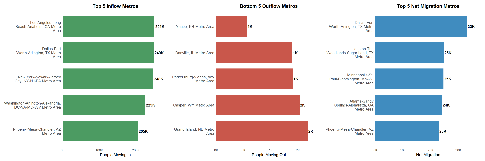
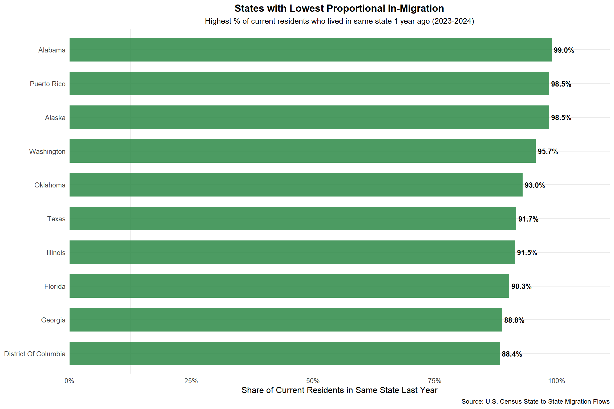
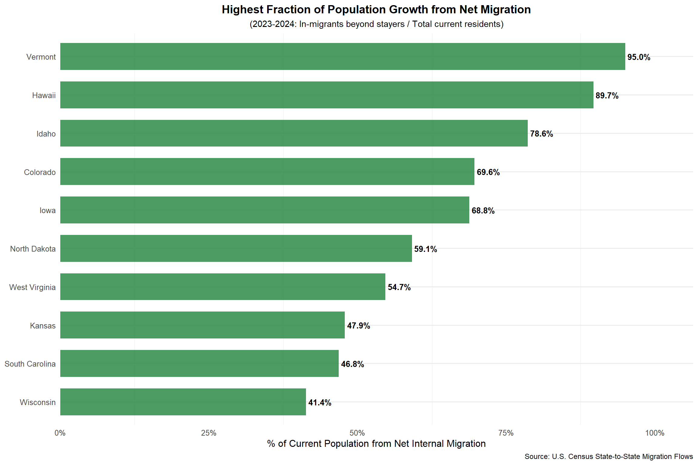
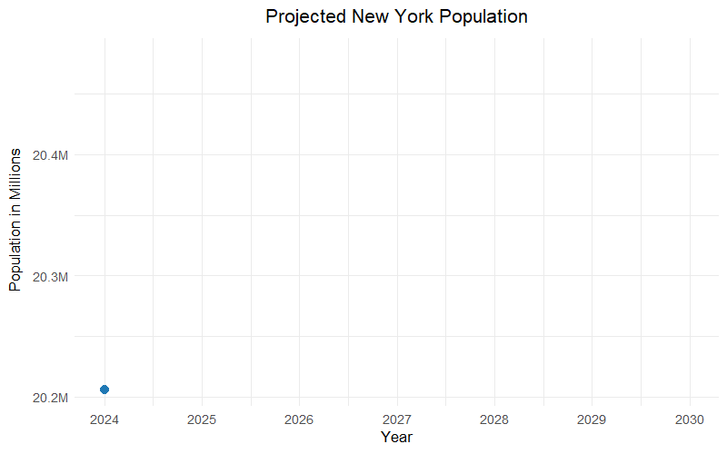

Mini-Project 03 - Who Goes There? US Internal Migration and Implications for Congressional Reapportionment
Author
miggonzalez
Introduction
Every decade the U.S. Census Bureau redraws the political map through congressional reapportionment, shifting House seats among the states based on how populations change. Most of the discussion focuses on births, deaths and international migration, but internal migration the movement of people across state lines quietly shapes these outcomes just as much.
In this mini project I use American Community Survey (ACS) 1 year data to estimate where Americans are moving within the country. From those migration flows I build a simple demographic model that projects state level populations over the next ten years and explores how those changes might translate into gains or losses of congressional seats. The aim is to connect the everyday decisions of people moving from one state to another to the bigger picture of how political power shifts across the U.S.
library(tidyverse)library(tidycensus)# 1. Set up local cachedata_dir <-"data/mp03_census_cache"if(!dir.exists(data_dir)) dir.create(data_dir, recursive =TRUE)options(tidy_census_cache_path = data_dir) # where tidycensus saves dataoptions(tigris_use_cache =TRUE) # cache shapefiles if you add them later# 2. Tidy‑style function for one year (no geometry for now)get_state_pop_year <-function(year) { dat <-get_acs(geography ="state",variables =c(total_population ="B01003_001"),year = year,survey ="acs1",geometry =FALSE,cache_table =TRUE ) dat %>%filter(variable =="total_population") %>%select(NAME, estimate) %>%rename(state_name = NAME,total_population = estimate ) %>%mutate(year = year) # add the year from the function argument}# 3. Run over 2015–2024YEARS <-c(2015:2019, 2021:2024)state_pop_df <-map_dfr(YEARS, get_state_pop_year)# 4. Check that it worked#state_pop_df
Please note This table represents the baseline state population tables which contains the total population estimates for each state and U.S territories.Due to the non-release of the 2020 1-year ACS report, the baseline population tables excludes 2020 and instead uses the ACS-1 estimates for 2015-2019 and 2021-2024.
Code
library(tidyverse)library(readxl)data_dir_mp03 <-"data/mp03"if(!dir.exists(data_dir_mp03)) dir.create(data_dir_mp03, recursive =TRUE)url_2024 <-"https://www2.census.gov/programs-surveys/demo/tables/geographic-mobility/2024/state-to-state-migration/State_to_State_Migration_Table_2024_T13.xlsx"file_2024 <-file.path(data_dir_mp03, "State_to_State_Migration_Table_2024_T13.xlsx")state_to_state_migration_2024 <-function() {# Download if missingif(!file.exists(file_2024)) {message("Downloading 2024 migration table to ", file_2024)download.file(url_2024, destfile = file_2024, mode ="wb") }# Read and clean the "Table" sheet (moves between states) tab <-read_excel( file_2024,sheet ="Table",skip =13, # adjust based on your filecol_names =FALSE )# Clean and tidy the main migration table tab_tidy <- tab %>%# DO NOT include this line:# select(!is.na()) %>% # drop empty rows if neededmutate(across(everything(), ~replace_na(as.character(.), "0"))) %>%pivot_longer(cols =-1,names_to ="state_1y",values_to ="population" ) %>%# Turn "N" into "0" to avoid NAs on coercionmutate(population =ifelse(population =="N", "0", population) ) %>%# Convert to integer; warning "NAs introduced by coercion" should now vanishmutate(population =as.integer(population)) %>%# --- ADD THIS: turn ...3, ...4 into real state names/abbreviations ---# In practice, you’ll want a full lookup table, but this is a minimal example:mutate(state_1y =case_when( state_1y =="...3"~"ALABAMA", state_1y =="...4"~"ALASKA",# Add others as needed, or use a lookup tableTRUE~"UNKNOWN" ) ) %>%# Create state_current from the first column of the original datamutate(state_current =toupper(.[[1]]),state_1y =toupper(state_1y),year_current =2024,year_1y =2023 ) %>%select(state_current, state_1y, population, year_current, year_1y) %>%filter(population >0) # remove "non‑moving" rows with 0 or NA# Read and clean the "Supplemental - Current Res" sheet (stationary) suppl <-read_excel( file_2024,sheet ="Supplemental - Current Res",skip =7,col_names =FALSE ) suppl_stay <- suppl %>%mutate(state_current =toupper(.[[1]]),state_1y =toupper(.[[1]]),population =as.integer(.[[2]]), # pick the right columnyear_current =2024,year_1y =2023 ) %>%select(state_current, state_1y, population, year_current, year_1y)# Combine both partsbind_rows(tab_tidy, suppl_stay)}mig_2024 <-state_to_state_migration_2024()
I stored the 2024 state-to-state migration flows in mig_2024, with columns state_current, state_1y, population, year_current = 2024, and year_1y = 2023. Each row represents the number of people who moved or remained between two states from 2023 to 2024.
Code
library(tidyverse)library(readxl)file_path <-"data/mp03/State_to_State_Migration_Table_2023_T13.xlsx"states <-toupper(state.name)# 1. STAYERS - Clean extractionstayers_raw <-read_excel(file_path, range ="B9:B58", col_names =FALSE)stayers <-tibble(state_current = states,state_1y = states,population =as.integer(pull(stayers_raw, 1)),year_current =2023,year_1y =2022)# 2. MOVERS - CRITICAL: Force ALL columns to character FIRSTraw_data <-read_excel(file_path, skip =8, col_names =FALSE)colnames(raw_data) <-paste0("col", 1:ncol(raw_data))mover_data <- raw_data %>%slice(2:51) %>%# 50 state rowsselect(col2:col51) %>%# 50 state columnsmutate(across(everything(), as.character)) %>%# FIX: ALL character!pivot_longer(everything(), names_to ="col_name", values_to ="population_raw")# 3. Add state identifiersmover_long <- mover_data %>%mutate(col_id =as.integer(str_remove(col_name, "col")),row_id =rep(1:50, each =50),state_current = states[row_id],state_1y = states[col_id],population =case_when( population_raw %in%c("N", NA_character_, "") ~NA_integer_,TRUE~as.integer(population_raw) ),year_current =2023,year_1y =2022 ) %>%filter(!is.na(population), population >0, state_current != state_1y) %>%select(state_current, state_1y, population, year_current, year_1y)# 4. FINAL COMBINEmigration_2023 <-bind_rows(stayers, mover_long)# 5. VERIFICATIONcat("Rows:", nrow(migration_2023), "Columns:", ncol(migration_2023), "\n")
I stored the 2023 state-to-state migration flows in mig_2023, with columns state_current, state_1y, population, year_current = 2023, and year_1y = 2022. Each row represents the number of people who moved or remained between two states from 2022 to 2023.
Code
# Task 4: Combine your 2023 + 2024 functionsstate_to_state_migration <-function() {# Call YOUR 2024 function (already working) mig_2024 <-state_to_state_migration_2024()# Call YOUR 2023 function (already working as migration_2023) mig_2023 <- migration_2023 # From your Task 3 chunk# COMBINE with bind_rows() → ~5,000 rows total combined_migration <-bind_rows(mig_2024, mig_2023)return(combined_migration)}# TEST THE FUNCTIONmigration_combined <-state_to_state_migration()# VERIFICATION (matches professor's requirements)cat("Rows:", nrow(migration_combined), "Columns:", ncol(migration_combined), "\n")
Q1.Which states have had the highest net population growth rates over the past decade?
Table 1: Top 10 States by Net Population Growth Rate (2015-2024)
Highest Population Growth Rates (2015-2024)
Compound Annual Growth Rate (CAGR) from ACS 1-Year Estimates
State
2015 Pop
2024 Pop
Total Growth
CAGR
Years
Idaho
1,654,930
2,001,619
20.9%
2.1%
9
Utah
2,995,919
3,503,613
16.9%
1.8%
9
Florida
20,271,272
23,372,215
15.3%
1.6%
9
Texas
27,469,114
31,290,831
13.9%
1.5%
9
Nevada
2,890,845
3,267,467
13.0%
1.4%
9
South Carolina
4,896,146
5,478,831
11.9%
1.3%
9
Delaware
945,934
1,051,917
11.2%
1.2%
9
Arizona
6,828,065
7,582,384
11.0%
1.2%
9
Washington
7,170,351
7,958,180
11.0%
1.2%
9
Montana
1,032,949
1,137,233
10.1%
1.1%
9
A The states with the highest population growth rates over the past decade were Idaho, Utah, Florida, Texas, and Nevada, with Idaho leading at about 20.9% total growth and a 2.1% Compound annual growth rate (CAGR). Overall, the table shows that many of the fastest-growing states were in the Mountain West and the south.
Migration into and Out of New York
Q2.If you meet someone who moved to New York State in the last year, what are the most likely states they moved from? If one of your friends announces they are moving out of the state, where are they most likely to move?
Into New York
Out of New York
Figure 1: New York Migration Flows (2023-2024)
A If I met someone who moved to New York State in the last year, they would have likely moved from Delaware. Alabama, Colorado, Arkansas, and Alaska. Conversely, if one of my friends were to move out of the NY state, they would likely move to West Virginia, New Jersey, Vermont, Wisconsin, or Colorado.
Migration into and out of New York City
Q3.If you meet someone who moved to New York City in the last year, what are the most likely metro areas they moved from? If one of your friends announces they are moving out of the city, where are they most likely to move?
Into New York metro
Out of New York metro
Figure 2: New York Metro Migration Flows (2016-2020 ACS). Note: Excludes international migration flows to focus on U.S. metro-to-metro patterns.
AIf you meet someone who moved to New York City in the last year, they most likely came from the Philadelphia-Camden-Wilmington metro, followed by Boston-Cambridge-Newton, Washington-Arlington-Alexandria, Los Angeles-Long Beach-Anaheim, and Poughkeepsie-Newburgh-Middletown.
If someone is moving out of New York City, they are most likely heading to Philadelphia-Camden-Wilmington, then Boston-Cambridge-Newton, Washington-Arlington-Alexandria, Los Angeles-Long Beach-Anaheim, or Poughkeepsie-Newburgh-Middletown.
State migration
Q4.Which states have had the highest amounts of in-migration and out-migration? Furthermore, which states have had the highest amount of net migration?
Absolute numbers, not per capita. Texas/Florida would lead if showing all 50 states.
Total movers (2023+2024): 651,916,084

Figure 3: State Migration Summary (2023 to 2024, 2-Year Total)
AThe states with the highest in-migration were Colorado, Vermont, Hawaii, North Dakota, and South Carolina. The highest out-migration was in Alaska, Arkansas, Colorado, Alabama, and Delaware, while the biggest net migration gains were in Vermont, Colorado, and Hawaii.
Migration patters at the metro level
Q5.Which metro areas have had the highest amounts of total in-migration and out-migration? Furthermore, which metro areas have had the highest amount of net migration?

Figure 4: Metro Area Migration Summary (2023 to 2024, 2-Year Total)
AThe metro areas with the highest in-migration were Los Angeles-Long Beach-Anaheim, Dallas-Fort Worth-Arlington, New York-Newark-Jersey City, Washington-Arlington-Alexandria, and Phoenix-Mesa-Chandler. The metro areas with the highest net migration were Dallas-Fort Worth-Arlington, Woodlands-Sugar Land, Minneapolis-St. Paul-Bloomington, Atlanta-Sandy Springs-Alpharetta, and Phoenix-Mesa-Chandler.
States with lowest in-migration
Q6.Which states have the highest fraction of residents who lived there last year? (That is, which states have the lowest proportional total in-migration?)

Figure 5: Top 10 States: Highest Share of Residents Living in Same State 1 Year Ago (2023-2024)
A The states with the highest share of residents who lived there last year were Alabama, Puerto Rico, Alaska, Washington, and Oklahoma. In other words, these states had the lowest proportional in-migration, with Alabama at about 99.0% and Puerto Rico and Alaska both at 98.5%.
Migration’s Share of the Growth
Q7.Which state has the highest fraction of its population growth attributable to net internal migration? That is, determine the total population growth of each state and see what fraction of it corresponds to net migration (as opposed to deaths, births, or international migration).

Figure 6: States Where Net Migration Drives Largest Share of Population Growth (2023-2024)
A The state with the highest fraction of population growth coming from net internal migration was Vermont, at about 95.0%. After Vermont, the highest shares were Hawaii, Idaho, Colorado, and Iowa.
Destination States and Migration Patterns
Q8.Which state had the highest amount of migration into your state? Of the people who moved out of your state, what was the most popular destination state?
Most Common Migration Destinations for New York Metro
Direction
State
People
Moved into New York from
Asia
57,986
Moved into New York from
Europe
29,101
Moved into New York from
Caribbean
20,551
Moved into New York from
Philadelphia-Camden-Wilmington, PA-NJ-DE-MD Metro Area
19,600
Moved into New York from
South America
16,320
Moved out of New York to
Philadelphia-Camden-Wilmington, PA-NJ-DE-MD Metro Area
19,600
Moved out of New York to
Washington-Arlington-Alexandria, DC-VA-MD-WV Metro Area
11,162
Moved out of New York to
Boston-Cambridge-Newton, MA-NH Metro Area
10,019
Moved out of New York to
Los Angeles-Long Beach-Anaheim, CA Metro Area
9,761
Moved out of New York to
Poughkeepsie-Newburgh-MiddleTown, NY Metro Area
9,492
A After excluding international migration, the Philadelphia-Camden-Wilmington metro area was the top U.S. metro source of movers into and out of New York City.
The State’s Largest Metro Area
Q9.What is the largest metropolitan area in your state? (You can answer this just using background knowledge; you do not have to use Census data here.)
The largest metropolitan area in New York State is the New York City metropolitan area, also called the New York-Newark-Jersey City metro area.
The Metro Network
Q10.Are there any metro areas that have a particularly high connection to your state’s largest metro? (E.g., NYCers were over 15% of people moving into the Miami Metro area.)
Metro Areas Most Connected to New York City
Metro Area
Movers from NYC Metro
Total In-Migration
Share from NYC Metro
Trenton-Princeton, NJ Metro Area
12,735
13,366
95.3%
Poughkeepsie-Newburgh-MiddleTown, NY Metro Area
15,475
18,054
85.7%
Bridgeport-Stamford-Norwalk, CT Metro Area
16,709
26,854
62.2%
East Stroudsburg, PA Metro Area
4,077
7,026
58.0%
Kingston, NY Metro Area
3,185
5,503
57.9%
A Among metro areas with the strongest ties to New York City, Trenton-Princeton, NJ had the highest share of movers from the NYC metro, followed by Poughkeepsie-Newburgh-Middletown, Bridgeport-Stamford-Norwalk, East Stroudsburg, and Kingston. This suggests that New York City’s strongest migration connections are mostly with nearby metro areas in the Northeast.
for (yr in2025:2030) { next_pop <-as.numeric(M_mat_num %*% current_pop)names(next_pop) <- states projections <-bind_rows( projections,tibble(year = yr, state = states, population = next_pop) ) current_pop <- next_popcat("Year", yr, "- Total pop:", comma(sum(next_pop, na.rm =TRUE)), "\n")}
Year 2025 - Total pop: 352,386,697
Year 2026 - Total pop: 352,386,697
Year 2027 - Total pop: 352,386,697
Year 2028 - Total pop: 352,386,697
Year 2029 - Total pop: 352,386,697
Year 2030 - Total pop: 352,386,697
Code
pop_2030_professor <- projections %>%filter(year ==2030) %>%mutate(population =round(population)) %>%arrange(desc(population))cat("\n✅ MODEL COMPLETE:\n")
Projected 2032 Congressional Apportionment: Top 5 States
State
Seats
Population
Pop per Seat
CALIFORNIA
49
40.3MM
823K
TEXAS
40
32.5MM
813K
FLORIDA
30
24.7MM
824K
NEW YORK
25
20.5MM
819K
PENNSYLVANIA
17
13.5MM
795K
Final Wite up
To reach our goal of increasing internal migration and strengthening New York’s political influence, the campaign should focus on the metro areas that already have the strongest connection to the New York City metro. These include Trenton-Princeton, Poughkeepsie-Newburgh-Middletown, Bridgeport-Stamford-Norwalk, East Stroudsburg, and Kingston. Most of these places are in the Northeast and already have ties to New York through commuting, family networks, or past migration, which makes them promising targets. People in these metros are also more likely to already know New York well, so the campaign can build on that familiarity and focus on jobs, housing, and opportunity.
A good slogan for the campaign would be something practical and local, like “Come Back to New York” or “New York Still Has Room for You.” The point is to keep the message simple and focused on nearby metro areas with the strongest migration links, especially Philadelphia and the other Northeast metros that already send people to New York or receive people from New York. In other words, the campaign should target places where New York already has a relationship, because that gives the state the best chance of increasing in-migration in a realistic way.
Based on the metro areas we are targeting and the strength of the existing migration links, we would hope to generate a modest but meaningful increase in net in-migration, on the order of roughly 10Kto 25K additional residents over several years. That would not change New York overnight, but it could still matter at the margin for population growth and congressional apportionment.

NoteAI Usage Statement
Perplexity was used to help write the code in this project, but all non-code text was generated without the use of any Generative AI tools. Additionally, Perplexity was used to provide additional background information on the topic and to brainstorm ideas for the final open-ended prompt.